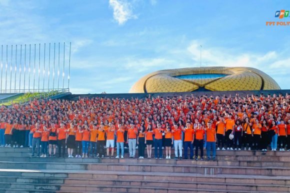

FPoly Hà Nội: CLB The Pirates Crew thông báo chiêu mộ thành viên mới
Các bạn sinh viên Cao đẳng FPT Polytechnic Hà Nội đã biết đến CLB The Pirates Crew chưa?
Nếu đam mê Hiphop, các bạn đừng bỏ lỡ cơ hội trở thành viên một trong những câu lạc bộ thú vị …
Xem thêm

Chuyện thật như mơ: Mới nhập học được trường cho đi du lịch “free”
Quả là sinh viên nhà người ta! Khi mà các bạn khác còn đang bỡ ngỡ, bắt đầu làm quen với trường mới, lớp mới thì vào tháng 11 vừa qua, sinh viên ngành Du lịch – Nhà hàng – …
Xem thêm
Rộn ràng list sự kiện cuối năm cùng sinh viên PR & Tổ chức sự kiện Hà Nội
Học kỳ này sinh viên ngành PR & Events tham gia 2 môn học: Dự án 1 và Nghiệp vụ Tổ chức sự kiện. Sản phẩm cuối môn của các bạn là tổ chức các sự kiện thực tế. Sau …
Xem thêm
Digital & Online Marketing – ngành học của thời đại số
Là một trong những ngành “hot” được đông đảo bạn trẻ thế hệ Z lựa chọn, Digital & Online Marketing đã trở thành một trong những ngành nghề được các nhà tuyển dụng săn đón và sẵn....
Xem thêm
Gặp gỡ chàng trai trẻ Gia Phong - người được biết đến là Spiderman
Tháng 12/2021, giới truyền thông đang rầm rộ về diễn viên Gia Phong trong bộ phim Spiderman No way home đang khuấy đảo giá vé thị trường phim cả Việt Nam lẫn thế giới....
Xem thêm